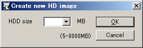
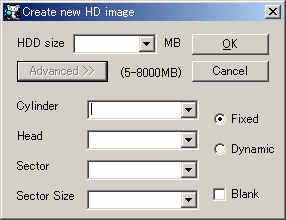

作成するハードディスクイメージのサイズを指定します。

NHD形式またはVHD形式を選択した場合は拡張オプションが使用可能です。
作成するハードディスクイメージのサイズを指定します。CHSパラメータは自動設定されます。
作成するハードディスクイメージのシリンダ数を指定します。
作成するハードディスクイメージのヘッド数を指定します。
作成するハードディスクイメージのセクタ数を指定します。
作成するハードディスクイメージのセクタサイズを指定します。
容量固定イメージ(Fixed)または容量可変イメージ(Dynamic)のどちらを作成するかを指定します。
容量可変イメージにすると最大容量の範囲内でディスク使用量に応じてディスクイメージのサイズが変化します。
注意：容量可変イメージを使用するにはNVL.DLLが必要です。
ディスクイメージを完全に未フォーマットの状態で作成します。 ここにチェックを入れて作成したイメージは初回使用時にDISKINIT等が必要になる場合があります。 Windows2000をセットアップ起動ディスクからセットアップする場合はここにチェックを入れて作成してください。